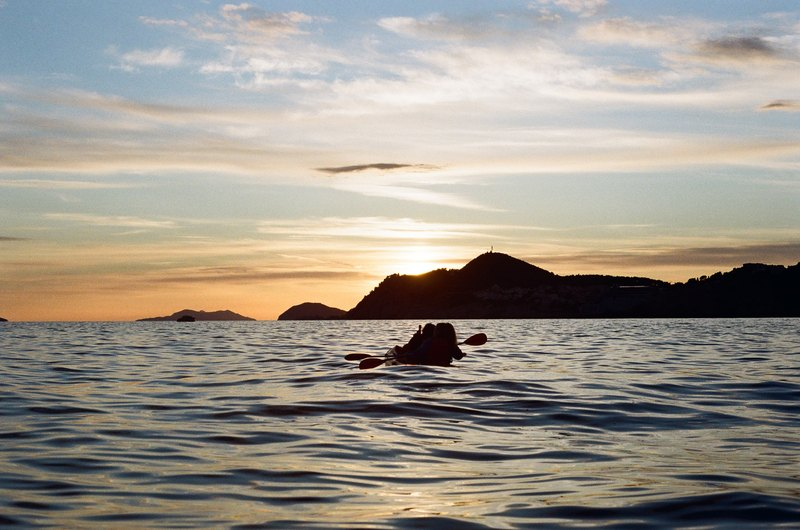
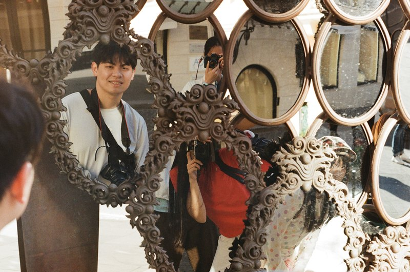

独立实践 / 内容运营 × AI辅助开发
个人内容账号与数字档案网站
从内容选题和受众反馈，到内容分类与网站呈现，将个人创作组织成可以持续浏览的数字档案。
从账号运营出发
独立开展 B站、抖音及宠物账号的选题策划、拍摄、剪辑、封面制作和发布。持续跟踪播放、互动及评论，结合反馈调整选题、节奏与视觉表达。
约 6 万B站累计播放
约 2.5 万B站单条最高播放
14.6 万宠物账号单条最高点赞
以上为最新简历中的历史账号数据，统计时点及后台截图待补；不同平台、指标不作直接比较。
将内容组织成网站
使用 AI 辅助开发个人网站，以 HTML、CSS 与 JavaScript 组织建筑、摄影、音乐及宠物内容，适配桌面和移动端浏览。
原个人网站首页参考。此处为非交互展示，原站保持不变。
真实内容的呈现
个人档案网站的摄影内容是已有素材。网站既承载内容，也提供不同主题之间的浏览入口。


我的实践链条
- 选题与制作
规划内容，完成拍摄、剪辑与视觉表达。
- 发布与复盘
查看播放、互动和评论，调整下一轮内容。
- 分类与展示
用网站组织不同主题，让内容形成可浏览的档案。
下一步补齐的证据
账号链接、代表内容与后台数据；网站分类决策、AI 协作过程及版本变化。现阶段不宣称网站经过用户测试或带来流量增长。